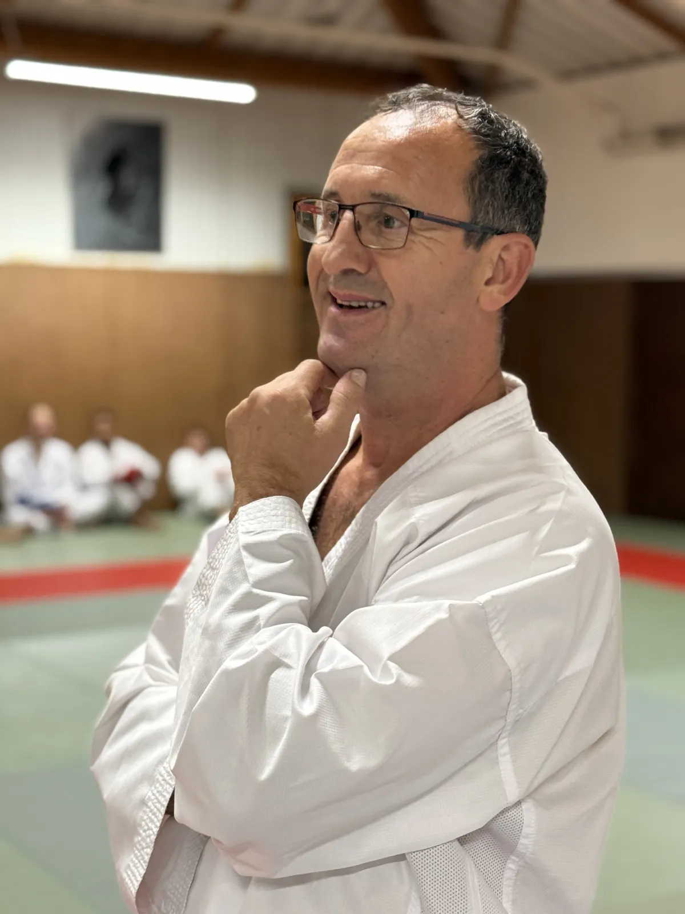
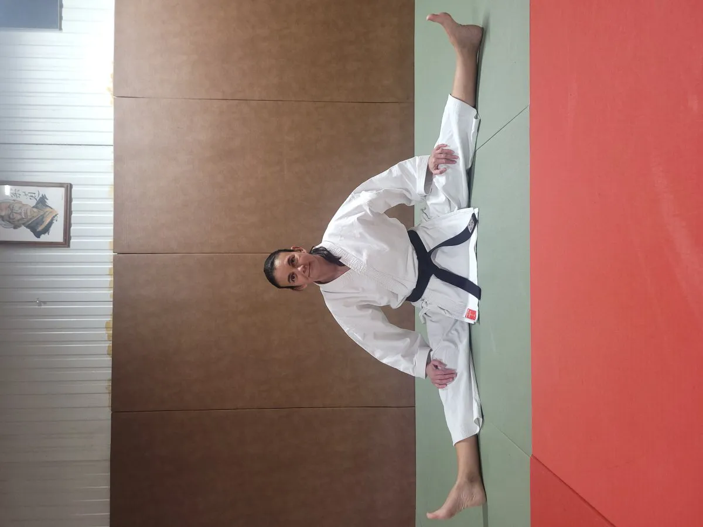

Ceinture Noire 8e DanJeff Collet
Professeur principal, champion de France, directeur de la ligue du Val-d'Oise. Plus de 40 ans d'expérience.

Notre histoire, nos valeurs et notre équipe d'enseignants diplômés.
ASV Karaté fait vivre le karaté à Vauréal, dans le Val-d'Oise, porté par une équipe passionnée et diplômée d'État.
Chez ASV Karaté, nous sommes fiers de notre équipe d'entraîneurs et d'enseignants : tous sont diplômés d'État et nombre d'entre eux sont d'anciens sportifs de haut niveau. Leur expertise et leur passion sont les piliers de notre enseignement, garantissant une transmission de qualité des techniques et des valeurs du karaté.
Notre club est un véritable lieu de vie, où règne une ambiance familiale et conviviale. Au-delà des cours réguliers, nous proposons de nombreuses activités tout au long de la saison : stages intensifs, événements et rencontres. Le dojo est également reconnu pour la présence de plusieurs hauts gradés, modèles pour nos élèves et gages du sérieux de notre approche pédagogique.
L'engagement et la rigueur dans la pratique.
Envers soi-même, les autres pratiquants et les règles du dojo.
Le contrôle de ses émotions et de ses actions.
La capacité à surmonter les défis et à progresser.
Reconnaître ses limites et garder la volonté d'apprendre.
Des enseignants diplômés d'État, passionnés par la transmission des techniques et des valeurs du karaté.

Ceinture Noire 8e DanProfesseur principal, champion de France, directeur de la ligue du Val-d'Oise. Plus de 40 ans d'expérience.
Formateur guidé par le partage des fondements éthiques et techniques du karaté.

Ceinture Noire 5e DanPrésidente et pédagogue, animée par la transmission de valeurs fortes et le développement du club.
Enseignant passionné par la transmission des valeurs et techniques fondamentales.
Enseignant dévoué à l'apprentissage du karaté et à l'accompagnement des jeunes.
Enseignant en Krav Maga : il développe votre confiance et votre capacité à réagir, axé self-défense pratique.
Le détail des cours de karaté figure sur l'affiche officielle à télécharger. Ci-dessous, les créneaux de Krav Maga / Self-Défense.
| Cours | Jour | Horaire | Lieu |
|---|---|---|---|
| Krav Maga / Self-Défense | Vendredi | 19h30 – 21h00 | Gymnase Marcel Pagnol — Saint-Ouen-l'Aumône |
| Krav Maga / Self-Défense | Dimanche | 10h00 – 11h30 | Gymnase de la Bussie — Vauréal |
Le Krav Maga se pratique à Vauréal et Saint-Ouen-l'Aumône, mais il est ouvert à tous : que vous soyez de Pontoise, Vauréal, Saint-Ouen-l'Aumône ou d'ailleurs, venez vous entraîner !
Votre 1er cours est offert, sans engagement. Enfants comme adultes, débutants bienvenus.